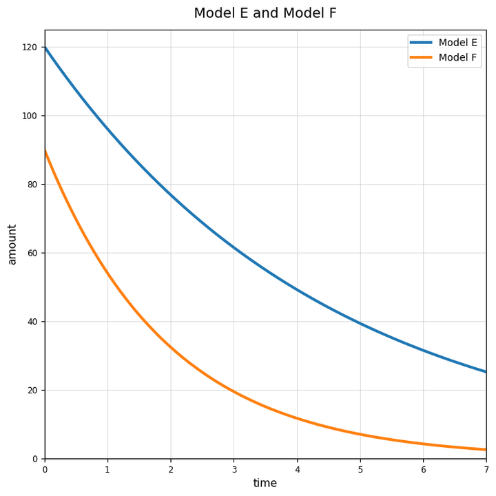
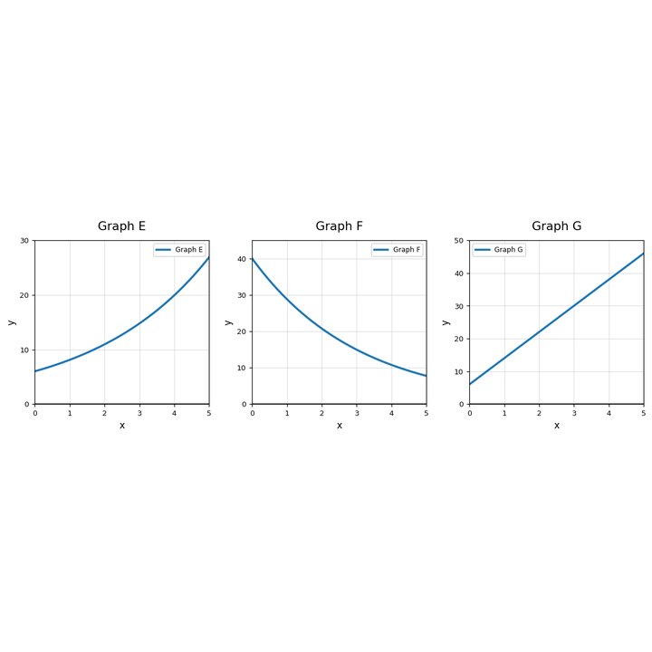

For an exponential graph of the form $y=a(b)^x$, what point on the graph helps identify $a$?
Use Model E and Model F. Which model decreases more quickly? Use graph evidence.

Use Graph E, Graph F, and Graph G. Match each graph to a description: increasing by multiplication, decreasing by multiplication, or increasing by addition. Explain your evidence.

Create an exponential growth function and an exponential decay function that both start at $40$. Make a small table for each and explain how the graphs would be alike and different.
For $y=15(2.4)^x$, identify the initial value and multiplier.
For $y=90(0.6)^x$, identify the initial value and multiplier.
A multiplier is $1.09$. What percent change does it represent?
A multiplier is $0.83$. What percent change does it represent?
Write an equation of the form $y=a(b)^x$ for the table.
| $x$ | 0 | 1 | 2 | 3 |
|---|---|---|---|---|
| $y$ | 81 | 54 | 36 | 24 |
A ball rebounds to $65$ percent of its previous height. Its first drop height is $120$ centimeters. Write a model for the height after $b$ bounces.
A student writes $y=20(1.4)^x$ for a situation that decreases by $40$ percent each step. Explain the error and write a better model.
Create a shuffled set of four cards: one table, one graph description, one equation, and one context that all match the same exponential relationship. Then explain how the cards match.
Does $250, 200, 160, 128, \ldots$ show growth or decay?
Find the common ratio in $3, 7.5, 18.75, 46.875, \ldots$.
Explain how you can use a table to distinguish exponential growth from linear growth.
Design two tables that look similar at first glance: one linear and one exponential. Explain what evidence separates them.